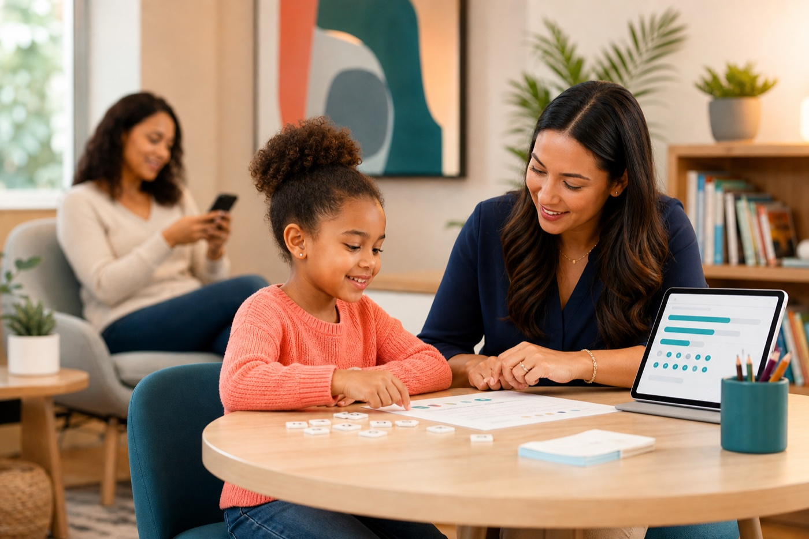

Sequence option
Phonics for Reading
An explicit, systematic sequence designed to build accurate decoding and increasingly fluent application.
{{ message }}
{% endfor %}Specialist-led structured literacy
Clear Code connects precise placement, specialist-led intervention, and live family progress in one clear path—so every session builds on what your child is ready to learn next.
Not ready to talk? Try the reading survey
Today’s focus
Build accuracy → apply in text
Private intervention should feel connected—not like a stack of assessments, paper notes, and disconnected updates.
How Clear Code works
Every decision is grounded in evidence, guided by a specialist, and translated into progress families can understand.
Gather reading evidence and family context.
Map the learner into one appropriate sequence.
Deliver focused sessions with a trained specialist.
Record accuracy, patterns, and next steps quickly.
Follow mastery, fluency, and what comes next.
For families
No waiting for a static report. Clear Code turns each completed session into a living, plain-language view of growth.
Family progress
Latest accuracy
88%
Sessions logged
12
Current focus
Short vowels
From the specialist
Accuracy is becoming more consistent. Next we’ll practice the same pattern in connected text.
Rapid session capture
Correct out of attempted
9 / 10
Structured fields prepared from placement
CompleteBuilt for specialists
Clear Code gives center teams a shared instructional system: placement, session capture, decision support, grouping, scheduling, and progress—all connected to the same skill evidence.
Fast, structured logging
Intelligent defaults reduce free text and keep evidence consistent.
Instructional decision support
See patterns and advisory next steps while specialists retain judgment.
Skill-based operations
Group and schedule learners around instructional fit.
Evidence that compounds
Each session strengthens a center’s longitudinal outcomes record.
Our approach
We align each learner to one coherent methodology at a time—so instruction is explicit, cumulative, and easier to evaluate.
Sequence option
An explicit, systematic sequence designed to build accurate decoding and increasingly fluent application.
Sequence option
A structured, multisensory pathway organized around cumulative phonics and orthographic concepts.
Placement is educational and instructional. Clear Code does not diagnose medical conditions or present instructional estimates as clinical conclusions.
Privacy & trust
FERPA-minded
Education records, role-based access, and center-scoped workflows.
Consent-aware
Clear authorization practices before eligible services and data sharing.
Human accountable
AI suggestions stay advisory, editable, and under specialist review.
A clearer next step
Talk with our team about your child’s reading history, current needs, and whether specialist-led structured-literacy intervention is a fit.